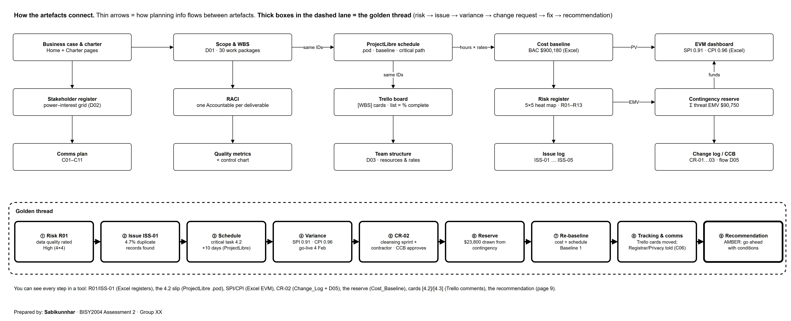
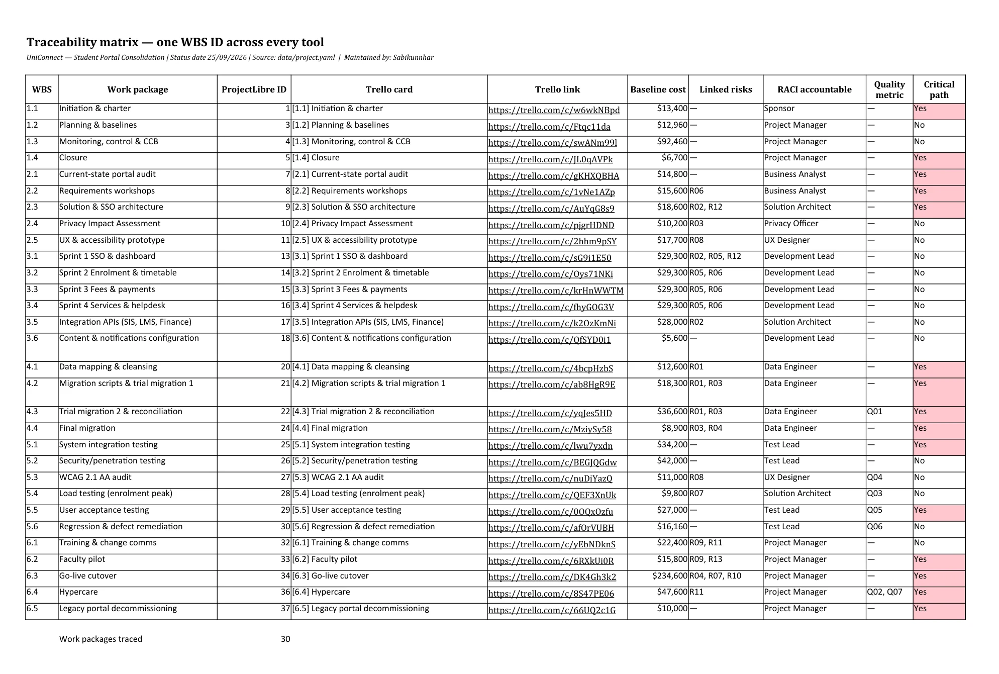

Integrated recommendation
Everything from the other pages, pulled together into one recommendation for the steering committee.
Integration map


Traceability matrix
Show all 30 work packages
| WBS | Work package | ProjectLibre ID | Trello | List | Cost | Risks | Accountable | Quality | Critical |
|---|---|---|---|---|---|---|---|---|---|
| 1.1 | Initiation & charter | 1 | [1.1] card | Done | $13,400 | , | Sponsor | , | Yes |
| 1.2 | Planning & baselines | 3 | [1.2] card | Done | $12,960 | , | Project Manager | , | No |
| 1.3 | Monitoring, control & CCB | 4 | [1.3] card | In Progress | $92,460 | , | Project Manager | , | No |
| 1.4 | Closure | 5 | [1.4] card | Product Backlog | $6,700 | , | Project Manager | , | Yes |
| 2.1 | Current-state portal audit | 7 | [2.1] card | Done | $14,800 | , | Business Analyst | , | Yes |
| 2.2 | Requirements workshops | 8 | [2.2] card | Done | $15,600 | R06 | Business Analyst | , | Yes |
| 2.3 | Solution & SSO architecture | 9 | [2.3] card | Done | $18,600 | R02, R12 | Solution Architect | , | Yes |
| 2.4 | Privacy Impact Assessment | 10 | [2.4] card | Done | $10,200 | R03 | Privacy Officer | , | No |
| 2.5 | UX & accessibility prototype | 11 | [2.5] card | Done | $17,700 | R08 | UX Designer | , | No |
| 3.1 | Sprint 1 SSO & dashboard | 13 | [3.1] card | Done | $29,300 | R02, R05, R12 | Development Lead | , | No |
| 3.2 | Sprint 2 Enrolment & timetable | 14 | [3.2] card | Review / QA | $29,300 | R05, R06 | Development Lead | , | No |
| 3.3 | Sprint 3 Fees & payments | 15 | [3.3] card | Sprint / To Do | $29,300 | R05, R06 | Development Lead | , | No |
| 3.4 | Sprint 4 Services & helpdesk | 16 | [3.4] card | Product Backlog | $29,300 | R05, R06 | Development Lead | , | No |
| 3.5 | Integration APIs (SIS, LMS, Finance) | 17 | [3.5] card | In Progress | $28,000 | R02 | Solution Architect | , | No |
| 3.6 | Content & notifications configuration | 18 | [3.6] card | Sprint / To Do | $5,600 | , | Development Lead | , | No |
| 4.1 | Data mapping & cleansing | 20 | [4.1] card | Done | $12,600 | R01 | Data Engineer | , | Yes |
| 4.2 | Migration scripts & trial migration 1 | 21 | [4.2] card | Blocked | $18,300 | R01, R03 | Data Engineer | , | Yes |
| 4.3 | Trial migration 2 & reconciliation | 22 | [4.3] card | Product Backlog | $36,600 | R01, R03 | Data Engineer | Q01 | Yes |
| 4.4 | Final migration | 24 | [4.4] card | Product Backlog | $8,900 | R03, R04 | Data Engineer | , | Yes |
| 5.1 | System integration testing | 25 | [5.1] card | Product Backlog | $34,200 | , | Test Lead | , | Yes |
| 5.2 | Security/penetration testing | 26 | [5.2] card | Product Backlog | $42,000 | , | Test Lead | , | No |
| 5.3 | WCAG 2.1 AA audit | 27 | [5.3] card | Product Backlog | $11,000 | R08 | UX Designer | Q04 | No |
| 5.4 | Load testing (enrolment peak) | 28 | [5.4] card | Product Backlog | $9,800 | R07 | Solution Architect | Q03 | No |
| 5.5 | User acceptance testing | 29 | [5.5] card | Product Backlog | $27,000 | , | Test Lead | Q05 | Yes |
| 5.6 | Regression & defect remediation | 30 | [5.6] card | Product Backlog | $16,160 | , | Test Lead | Q06 | No |
| 6.1 | Training & change comms | 32 | [6.1] card | Product Backlog | $22,400 | R09, R11 | Project Manager | , | No |
| 6.2 | Faculty pilot | 33 | [6.2] card | Product Backlog | $15,800 | R09, R13 | Project Manager | , | Yes |
| 6.3 | Go-live cutover | 34 | [6.3] card | Product Backlog | $234,600 | R04, R07, R10 | Project Manager | , | Yes |
| 6.4 | Hypercare | 36 | [6.4] card | Product Backlog | $47,600 | R11 | Project Manager | Q02, Q07 | Yes |
| 6.5 | Legacy portal decommissioning | 37 | [6.5] card | Product Backlog | $10,000 | , | Project Manager | , | Yes |


The golden thread
R01 was rated High and we tried to reduce it by profiling the data, but that only half worked. It turned into ISS-01 when trial migration 1 found 4.7% duplicates. Task 4.2 is critical, so go-live slipped ten days and SPI dropped to 0.91. The CCB approved CR-02, paid from contingency, to crash migration with a contractor and fast-track SIT prep. We moved and updated the Trello cards and briefed the Registrar and Privacy Officer.
Status by dimension
| Dimension | RAG | Evidence |
|---|---|---|
| Scope | Green | CR-01 deferred, CR-03 absorbed; scope baseline stable. |
| Schedule | Amber | SPI 0.91 driven by critical task 4.2; forecast go-live 4 Feb leaves 1 day to the 5 Feb deadline until CR-02 recovers about 8 days. |
| Cost | Amber | CPI 0.96; typical EAC within BAC + contingency, but the CPI×SPI EAC would need management reserve. |
| Risk | Amber | R01 materialised; R04 and R07 still High until load test and trial 2. |
| Quality | Amber | Migration accuracy 95.3% vs 99.5% target; control chart special cause in week 12. |
| Stakeholders | Green | Registrar and Privacy Officer briefed per C06; sponsor approved CR-02. |
Verdict: AMBER, go ahead with conditions
Keep going to go-live, but only if the migration gets back on track. The plan is funded, scope is stable and the stakeholders are on board. The risk is mostly in one critical workstream.
Conditions
- Trial migration 2 reconciliation ≥ 99.5% by 23 Oct 2026 (M4), signed by the Registrar.
- Load test p95 < 2 s at 5,000 users before the M5 gate.
- SPI back to ≥ 0.95 by the 23 Oct status report.
- If M4 is missed by 6 Nov 2026, invoke the fallback: go-live moves to the mid-semester break with legacy portals kept live.
Unresolved issues
- ISS-01 duplicate records: merge rules awaiting Registrar decisions.
- ISS-02 LMS token-refresh defect: vendor patch due 2 Oct.
- Performance (R07) not yet evidenced: load test not started.
What we recommend
| # | Recommendation | Evidence |
|---|---|---|
| 1 | Implement CR-02 immediately and report daily reconciliation rates to the Registrar. | Change log CR-02; Issue log ISS-01 |
| 2 | Hold the go-live gate criteria fixed; no new scope before M6. | Change log CR-01; RACI |
| 3 | Bring load testing forward as a spike during SIT preparation. | Risk register R07; CPM float table |
| 4 | Keep contingency for R04/R07; do not release management reserve. | Cost baseline and reserves |
| 5 | Start the go-live comms campaign on schedule to reduce R11. | Comms plan C08; Risk register R11 |
References
- Atlassian. (n.d.). Trello [Web application]. https://trello.com/
- JGraph. (n.d.). draw.io [Computer software, desktop version 31.5.2]. https://www.drawio.com/
- Kerzner, H. (2022). Project management: A systems approach to planning, scheduling, and controlling (13th ed.). Wiley.
- Office of the Australian Information Commissioner. (n.d.). Chapter 11: APP 11 Security of personal information. https://www.oaic.gov.au/privacy/australian-privacy-principles/australian-privacy-principles-guidelines/chapter-11-app-11-security-of-personal-information
- Privacy Act 1988 (Cth). https://www.legislation.gov.au/C2004A03712/latest
- Project Management Institute & Agile Alliance. (2017). Agile practice guide. Project Management Institute.
- Project Management Institute. (2021). A guide to the project management body of knowledge (PMBOK® guide) – Seventh edition and The standard for project management. Project Management Institute.
- ProjectLibre. (n.d.). ProjectLibre [Computer software, version 1.9.8]. https://www.projectlibre.com/
- Schwalbe, K. (2019). Information technology project management (9th ed.). Cengage Learning.
- World Wide Web Consortium. (2018). Web content accessibility guidelines (WCAG) 2.1. https://www.w3.org/TR/WCAG21/
Links to other pages
- Monitoring: EVM and issues
- Risk: R01 and reserves
- Schedule: critical path
What we decided
Go ahead with go-live on the current plan, with a proper go/no-go at M4 (trial 2 reconciliation ≥ 99.5%) and the mid-semester fallback ready.